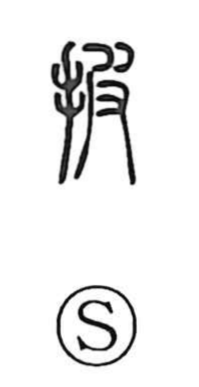

披

Uncategorized
Kun: hiraku | On: hi
to open ・ to spread out ・ to tear off
Explanation
披 is a phono-semantic character: the hand component 扌 marks a manual action, while 皮, which gives the on reading hi, originally depicts the hide being pulled off an animal. From that vivid image of grasping and stripping, the character came to mean pulling something apart to open or spread it. The Shuowen glosses it as “to hold from the side,” evoking the motion of taking hold and prising something open—hence the senses of opening and spreading out.